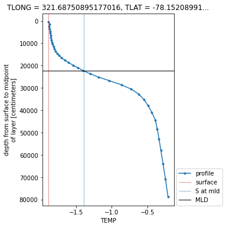

How to Use xarray.map_blocks for Vertical Interpolation of a 3D Field¶
Within this example, we cover how to use xarray.map_blocks to calculate the mixed-layer depth within the CESM POP model output.
This calculation is “embarassingly parallel” such that each calculation is done within a single a column. The calculation should be easily computed within each column across the model domain. This is where map_blocks can be used to improve the performance of this metric.
Imports and Data Ingestion¶
We use the following libraries/packages within this example
import os
from scipy import interpolate
import numpy as np
import xarray as xr
import matplotlib.pyplot as plt
import pop_tools
Next, we read in the data using xarray and subset for temperature and salinity, subsetting for a smaller portion of the domain for testing purposes
ds = xr.merge((
xr.open_dataset('/glade/p/cgd/oce/projects/cesm2-marbl/xpersist_cache/3d_fields/TEMP-presentday-monclim.nc', chunks={}),
xr.open_dataset('/glade/p/cgd/oce/projects/cesm2-marbl/xpersist_cache/3d_fields/SALT-presentday-monclim.nc', chunks={}),
))
ds = ds[['TEMP', 'SALT']].persist()
# subset for testing purposes
ds = ds.isel(member_id=slice(0, 2), nlat=slice(2, 5), nlon=slice(1, 5))
Data Operation¶
Next, we setup a function to compute the mixed layer depth (MLD). The MLD is defined as the point in the water column where the potential density (sigma) exceeds the surface density by a specified threshold (dsigma).
def mld_dsigma(SALT, TEMP, dsigma=0.03, rho_chunks={'nlat': 16, 'nlon': 16}):
"""
Compute MLD based on ∆σ criterion. Uses xarray.map_blocks.
Parameters
----------
SALT : xarray.DataArray
Salinity
TEMP : xarray.DataArray
Potential temperature
dsigma : float, optional
The value for ∆σ.
rho_chunks: dictionary, optional
Dimension chunk parameters to chunk rho by
Returns
-------
MLD : xarray.DataArray
The MLD (m) defined as the point in the water column where
density exceeds rho[0] + dsigma.
"""
# determine dimensionality
dims_in = SALT.dims
assert dims_in == TEMP.dims, 'dimension mismatch'
assert 'z_t' in SALT.coords, 'z_t not found in SALT coords'
# drop ancillary coordinates
SALT = SALT.reset_coords(drop=True)
TEMP = TEMP.reset_coords(drop=True)
# compute density - this is where there is a tradeoff in using a "core dimension" for chunking
rho = pop_tools.eos(SALT.chunk({'z_t': 10}),
TEMP.chunk({'z_t': 10}),
depth=SALT.z_t * 0.).compute()
# add these coordinates which creep in somewhere, I think when xarray does the unstack
# without these, I get an error: not expecting {'nlat', 'nlon'}
# chunking here is arbitrary and maybe suitable for the global POP_gx1v7 grid
if 'nlat' in rho.dims and 'nlon' in rho.dims:
rho = rho.assign_coords({
'nlat': xr.DataArray(np.arange(len(SALT.nlat)), dims=('nlat')),
'nlon': xr.DataArray(np.arange(len(SALT.nlon)), dims=('nlon')),
})
# Compute density - this will help the workflow from being "bogged down" with too many tasks
rho = rho.chunk(rho_chunks).persist()
# Setup a template
template = rho.isel(z_t=0).drop('z_t')
template.attrs['long_name'] = 'MLD'
template.attrs['units'] = SALT.z_t.attrs['units']
template.name = 'MLD'
# compute and return MLD - this is where the parallelization comes in
return xr.map_blocks(
interp_mld_dsigma, rho,
kwargs=dict(dsigma=dsigma),
template=template,
)
Applying Mixed Layer Depth Calculation¶
This function, interp_mld_dsigma is designed to be called within xr.map_blocks. It assumes that rho_in has a depth dimension, z_t and some number of unspecified other dimensions, non_vertical_dims.
The non_vertical_dims are “stacked” using xarray.stack and the code loops over these dimensions, performing linear interpolation in z_t at each location.
The data are returned unstacked with the dimensions ordered as they arrived in rho_in.
We define the function here, then immediately call it to test it; arbitrarily, we’re calling it on TEMP rather than density.
def interp_mld_dsigma(rho_in, dsigma=0.03):
"""compute MLD at point using interpolation"""
non_vertical_dims = [d for d in rho_in.dims if d not in ['z_t']]
rho_stack = rho_in.stack(non_vertical_dims=non_vertical_dims)
mld_stack = xr.full_like(rho_stack.isel(z_t=slice(0, 1)), fill_value=np.nan)
N = rho_stack.sizes["non_vertical_dims"]
z_t = rho_in.z_t
for i in range(N):
# if all NaN, skip this column
if rho_stack[:, i].isnull().all():
continue
# if the whole column has density less than the threshold, set MLD to deepest point
if (rho_stack[:, i] < rho_stack[0, i] + dsigma).all():
k = np.where(~np.isnan(rho_stack[:, i]))[0]
mld_stack[:, i] = z_t[k[-1]]
# linearly interpolate
else:
f = interpolate.interp1d(
rho_stack[:, i], z_t,
assume_sorted=False,
)
mld_stack[:, i] = f(rho_stack[0, i] + dsigma)
return mld_stack.unstack().isel(z_t=0, drop=True).transpose(*non_vertical_dims)
# simulate what happens in map_blocks
subset_to_singletons = dict(nlat=slice(0, 1), nlon=slice(0, 1), member_id=slice(0, 1), month=slice(0, 1))
dsigma=0.5
temp_depth = interp_mld_dsigma(ds.TEMP.isel(subset_to_singletons).reset_coords(drop=True), dsigma=dsigma)
Visualize the Output¶
Here’s a plot of the MLD diagnosed using TEMP by the linear interpolation method above.
plt.figure(figsize=(4, 6))
ds.TEMP.isel(subset_to_singletons).T.plot(y='z_t', marker='.', label='profile')
plt.axvline(ds.TEMP.isel(subset_to_singletons).isel(z_t=0),
linewidth=0.5, c='tab:red', label='surface')
plt.axvline(ds.TEMP.isel(subset_to_singletons).isel(z_t=0)+dsigma,
linewidth=0.5, c='tab:blue', label='S at mld')
plt.axhline(temp_depth*1e2, linewidth=1., c='k', label='MLD')
plt.legend(loc=(1.02, 0));
ylm = plt.ylim()
plt.ylim(ylm[::-1]);

Running this on the Entire Dataset¶
Now let’s put everything together, running the mld_dsigma calculation on the “full” dataset (note that it is still subset given the smaller domain mentioned previously).
%%time
mld = mld_dsigma(ds.SALT, ds.TEMP).compute()
This process takes ~2 seconds. Currently, this implementation takes 18 minutes to compute mld_sigma for the entire spatial domain for a single ensemble member. Further posts will investigate using xarray.apply_unfunc in this context, comparing the performance and tradeoffs.
Potential opportunities for improvements¶
When working through these computations, it is important to use the dask dashboard to determine where there are bottlenecks within the analysis.
Also, it can be helpful to understand the nature of the computation. In this case, this computation is considered to CPU heavy, so the key is increasing the number cores being utilized, using a line like this at the beginning:
# Increase # of threads, more compute heavy
cluster = ncar_jobqueue.NCARCluster(cores=8, processes=4, memory='80 GB', project='project_number')
cluster.scale(jobs=10)
client = Client(cluster)
Another method of optimization could be increasing/decreasing the chunksize within the mld function
mld = mld_dsigma(ds_whole.SALT, ds_whole.TEMP, rho_chunks={'nlat': 16*2, 'nlon': 16*2}).compute()
There are no clear correct answers here - it will depend on the specific use case, and the nature of the computation, but hopefully these starting points will help!